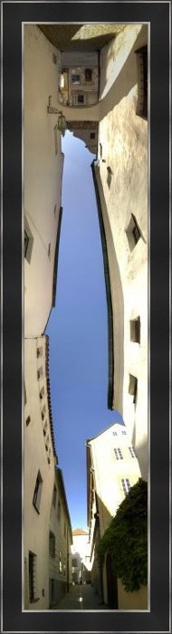

My Creative Side
Screenwriting. Digital and tabletop game design. Visual Design. Photography.
I didn't start out as a programmer, and in fact my degree is in Film Production. I've always been intrinsically creative. I use creativity to stand out. I use creativity to solve problems. But mostly I use creativity to make things more fun and more interesting.
My creative focus has shifted numerous times over the years, from fine arts to computer graphics to film production to screenwriting to video game design to tabletop game design. I've been particularly interested in combining the storytelling from my film background with the interactive experience in games.
One interesting aspect of having such a wide a range of interests, is that many of my disciplines overlap. This leads to unique situations to creatively use elements from one discipline in another. Another benefit is that I often have a unique perspective, and can pull back to see the "big picture" from a different angle.
Creative Work
Digital game design

I constantly come up with creative game ideas. Some of them are playable online on my games portfolio.
Tabletop game design

I've made a couple of commercial games including "Microscopic", a card game where players race to evolve genes into cells into organisms.
Panoramic Photography
A collection of unique perspectives from my travels at home and abroad.
View gallery